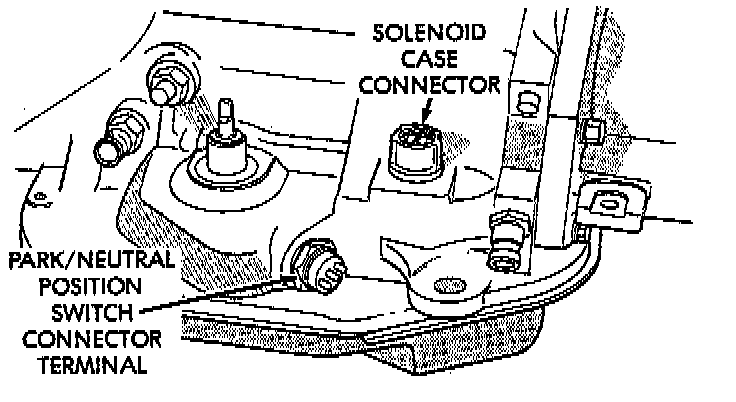
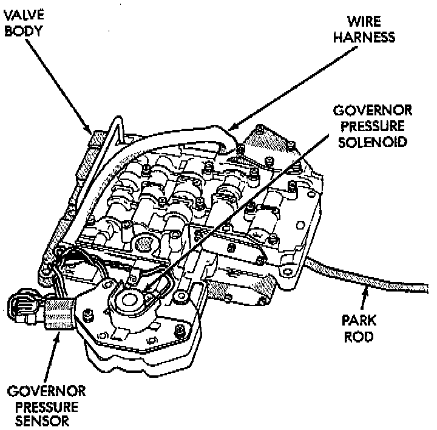
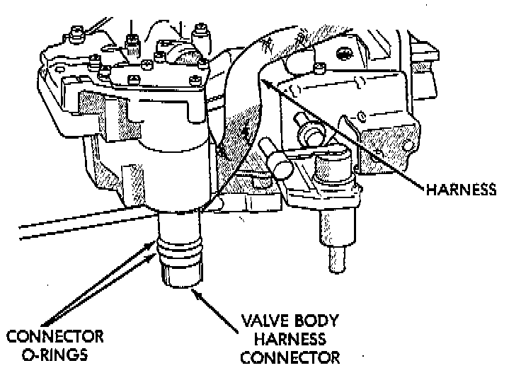
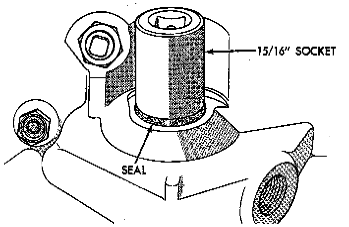
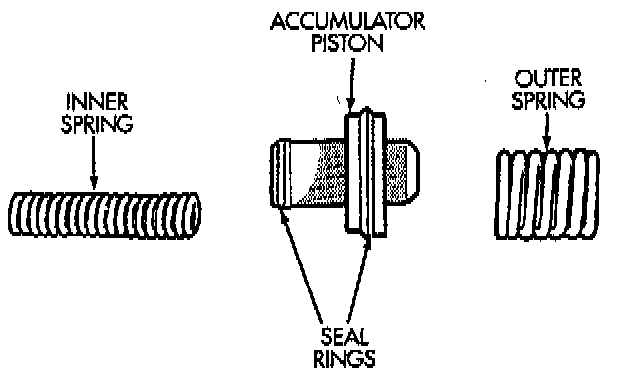

Removal and Installation
NOTES: The valve body can be removed for service without having to remove the transmission assembly. The valve body can be disassembled for cleaning and inspection of the individual components. The only replaceable valve body components are:- Manual lever.
- Manual lever washer, seal, E-clip, and shaft seal.
- Manual lever detent ball.
- Throttle lever.
- Fluid filter
- Pressure adjusting screw bracket
- Governor pressure solenoid.
- Governor pressure sensor.
- Converter clutch/overdrive solenoid assembly and harness (includes sump temperature thermistor).
- Governor housing gasket.
- Solenoid case connector O-rings.
The remaining valve body components are serviced only as part of a complete valve body assembly.
REMOVAL
1. Shift transmission into NEUTRAL.
2. Raise vehicle.
3. Remove gearshift and throttle levers from shaft of valve body manual lever.

4. Disconnect wires at solenoid case connector.
5. Position drain pan under transmission oil pan.
6. Remove transmission oil pan and gasket.
7. Remove fluid filter from valve body.
8. Remove bolts attaching valve body to transmission.
9. Lower valve body enough to remove accumulator piston and springs.
10. Work manual lever shaft and electrical connector out of transmission case.

11. Lower valve body, rotate valve body away from case, pull park rod out of sprag, and remove valve body.

INSTALLATION
1. Check condition of O-ring seals on valve body harness connector. Replace seals on connector body if cut or worn.

2. Check condition of manual lever shaft seal in transmission case. Replace seal if lip is cut or worn. Install new seal with 15/16 deep well socket.

3. Check condition of seals on accumulator piston. Install new piston seals, if necessary.
4. Place valve body manual lever in low (1 position) so ball on park lock rod will be easier to install in sprag.
5. Lubricate shaft of manual lever with petroleum jelly. This will ease inserting shaft through seal in case.
6. Lubricate seal rings on valve body harness connector with petroleum jelly.
7. Position valve body in case and work end of park lock rod into and through pawl sprag. Turn propeller shaft to align sprag and park lock teeth if necessary. The rod will click as it enters pawl. Move rod to check engagement.
CAUTION: It is possible for the park rod to displace into a cavity just above the pawl sprag during installation. Make sure the rod is actually engaged in the pawl and has not displaced into this cavity.
8. Install accumulator springs and piston into case. Then swing valve body over piston and outer spring to hold it in place.
9. Align accumulator piston and outer spring, manual lever shaft and electrical connector in case.
10. Then seat valve body in case and install one or two bolts to hold valve body in place.
11. Tighten valve body bolts alternately and evenly to 11 Nm (100 inch lbs.) torque.
12. Install new fluid filter on valve body. Tighten filter screws to 4 Nm (35 inch lbs.) torque.
13. Install throttle and gearshift levers on valve body manual lever shaft.
14. Check and adjust front and rear bands if necessary.
15. Connect solenoid case connector wires.
16. Install oil pan and new gasket. Tighten pan bolts to 17 Nm (13 ft. lbs.) torque.
17. Lower vehicle and fill transmission with MOPAR ATF+4, type 9602 fluid.
18. Check and adjust gearshift and throttle valve cables, if necessary.